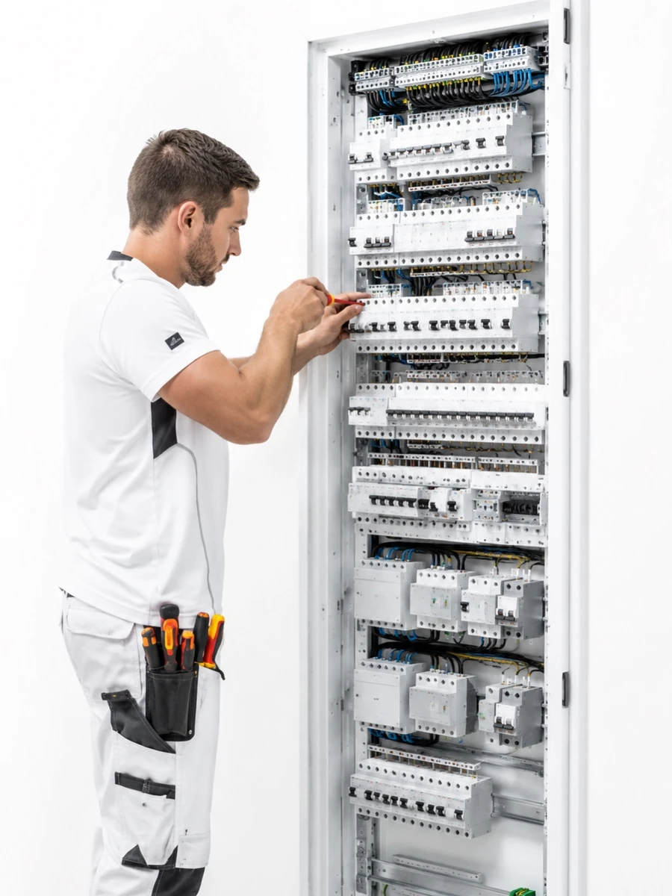

Realizace
Kompletní elektroinstalace
Komplexní elektroinstalace při rekonstrukcích bytů, domů a společných prostor.
Galerii postupně doplňujeme o realizované zakázky z celé České republiky.

Komplexní elektroinstalace při rekonstrukcích bytů, domů a společných prostor.

Montáž, rekonstrukce, jištění a modernizace rozvaděčů.

Smart Home, data, řízení a moderní technické systémy.

Rekonstrukce, příprava tras, zednické, fasádní a dokončovací práce.
Každý projekt je vizitkou naší práce. Další realizace budeme postupně doplňovat.